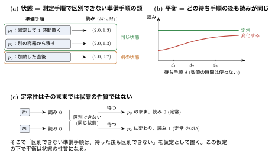
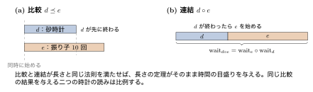

3 状態と平衡状態
「状態」も「平衡」も「時間」も原始概念にしない。 原始概念は、準備手順、測定手順、読み、待ち手順の四つである。 読みは、準備手順の直後に測定手順を行って得る実数である。 準備手順 \(p\) に待ち手順 \(d\) を続けたものも一つの準備手順であり、\(\mathrm{wait}_d\, p\) と書く。 読みが実数で再現することは仮定として置く。

準備手順の集まり \(\mathrm{Prep}\)、測定手順 (巨視的なもの) の集まり \(\mathrm{Meas}\)、読み \(\mathrm{outcome} : \mathrm{Prep} \times \mathrm{Meas} \to \mathbb {R}\) が与えられているとする。
待ち手順の集まり \(\mathrm{Dur}\) と、準備手順に待ち手順 \(d\) を続ける写像 \(\mathrm{wait}_d : \mathrm{Prep} \to \mathrm{Prep}\) が与えられているとする。
待ち手順とは、「砂時計の砂が落ち切るまで待つ」「振り子が 10 回振れるまで待つ」のように、基準となる過程が終わるまで待つ手順である。 数値の時間は使わない。
二つの準備手順がどの測定手順でも同じ読みを与えるとき、区別できないという。 状態とは、区別できない準備手順の類である。 測定手順の集まりを広げれば、状態はより細かく分かれる。
準備手順 \(p\) が定常であるとは、任意の待ち手順 \(d\) と測定手順 \(M\) で \(\mathrm{outcome}(\mathrm{wait}_d\, p, M) = \mathrm{outcome}(p, M)\) となることをいう。
どれだけ待っても変わらないと言えれば足りるので、平衡の定義に数値の時間は要らない。
区別できない二つの準備手順で、一方は定常で他方は定常でない例がある。
準備手順は \(0, 1, 2\)、測定手順は一つとする。 \(0\) と \(1\) の読みはどちらも \(0\) で、\(2\) の読みは \(1\) とする。 \(0\) はどの待ち手順を続けても変わらず、\(1\) は待ち手順を続けると \(2\) に変わるとすればよい。
区別できない準備手順は、待ち手順を続けた後も区別できない。
この仮定の下で、区別できない準備手順の一方が定常なら他方も定常である。
\(\mathrm{outcome}(\mathrm{wait}_d\, q, M) = \mathrm{outcome}(\mathrm{wait}_d\, p, M) = \mathrm{outcome}(p, M) = \mathrm{outcome}(q, M)\)。
平衡状態とは、定常な準備手順で作られる状態である。 平衡状態の集合を \(\Gamma \) と書く。 以下の章の状態は、この \(\Gamma \) を念頭に置いている。
3.1 時間の目盛り
数値の時間は、長さと同じ外延的構造から作る。 平衡の定義には使わないが、時計の読みが何を測っているかをここで明示する。

待ち手順の比較 \(d \preceq e\) は、二つの基準過程を同時に始めて \(d\) が \(e\) より遅れずに終わることである。 連結 \(d \circ e\) は、\(d\) が終わってから \(e\) を始めることである。 これらが外延的構造をなし、\(\mathrm{wait}_{d \circ e} = \mathrm{wait}_e \circ \mathrm{wait}_d\) を満たすとき、時計という。
振り子の振れや砂時計の砂の落下を基準過程とする待ち手順は、時計をなす。
同時に始めることは、同じ場所で二つの出来事が一致することとして直接観測できるとする。
単位の待ち手順 (振り子の一振りなど) を選ぶと、比較を大小に、連結を和に移す時間の目盛りが一意に存在する。 同じ比較と連結を与える二つの時計 (砂時計と振り子など) の読みは比例する。
長さの目盛りの存在定理、一意性定理、比例の定理をそのまま適用する。
定常な準備手順を待ち手順を続けて得た準備手順も定常である。
\(\mathrm{wait}_e(\mathrm{wait}_d\, p) = \mathrm{wait}_{d \circ e}\, p\) の読みは \(p\) の読みと同じで、\(\mathrm{wait}_d\, p\) の読みも \(p\) の読みと同じ。
3.2 状態の空間
状態どうしを足すことと、状態を \(t\) 倍することを準備手順として定める。 長さの測定で棒の連結を決めたのと同じ役割を持つ。 後の章では、組成、内部エネルギー、エントロピーを、この空間の上の示量的な関数として作る。
系に差し込んで二つの部分に分ける、物質を通さない薄い壁を仕切りという。
平衡状態の系に仕切りを差し込んでも、状態は変わらない。 差し込んだその仕切りを抜いても、状態は変わらない。
気体の容器に差し込む薄い板が例である。 仕切りが状態を変えないことは、仕切りの体積と、差し込むときの乱れを無視できるという理想化である。
この経験則は、一つの平衡状態を仕切りで分け、その仕切りを抜いて元に戻す場合だけについての主張である。 別々に用意した二つの状態 (例えば熱い水と冷たい水) を仕切りで隔てて並べ、その仕切りを抜く場合には使えない。 その場合は仕切りを抜くと熱や物質が流れ、別の平衡状態に移りうる。 この操作は内部の拘束を外す断熱操作であり、エントロピーの凹性 (定理 118) や混合 (第 6.1 節の例) で使う。
状態 \(X\) の系と状態 \(Y\) の系を、仕切りで隔てたまま並べて一つの系とみなしたものの状態を \(X + Y\) と書く。
\(0 {\lt} t \le 1\) のとき、平衡状態 \(X\) の系に仕切りを入れて体積の割合 \(t : (1-t)\) に分け、\(t\) の側の部分の状態を \(tX\) と書く。 \(t {\gt} 1\) のときは、\((1/t)\) 倍が \(X\) になる状態を \(tX\) と書く。
\(t {\gt} 1\) の \(tX\) は、同じ物質を多く用意して作る。
複合とスケーリングで作った状態全体を \(\mathcal{S}\) と書く。
\(\mathcal{S}\) では次の等式が成り立つ。
並べる順序と組み方によらない：\(X + Y = Y + X\)、\((X + Y) + Z = X + (Y + Z)\)。
分割したものを並べ直すと元に戻る：\(tX + (1-t)X = X\)。
分割を重ねてもよい：\(s(tX) = (st)X\)、\(t(X + Y) = tX + tY\)。
等号は状態 (定義 11) として等しいことを表す。 これは \(\mathcal{S}\) が \(\mathbb {R}_{\ge 0}\) 加群であるということであり、Lean では Mathlib の加群の型クラスで書く。 \(t\) を実数全体に広げるのは理想化で、実際に作れるのは有理数の \(t\) である。
関数 \(f : \mathcal{S} \to \mathbb {R}\) が示量的であるとは、\(f(X + Y) = f(X) + f(Y)\) と \(f(tX) = t\, f(X)\) が成り立つことをいう。